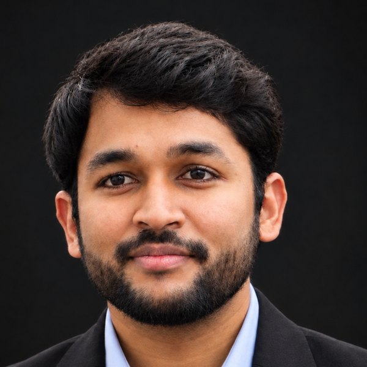

How do we know an AI agent is actually good?
A research paper on evaluating agentic LLMs: building composite metrics for agent performance and checking statistically that they measure what they claim to. More once it's published.

Senior Data Engineer · Walmart
I build petabyte-scale data platforms and the agentic AI that keeps them running
About
Somewhere between raw data arriving and a decision being made, someone has to make sure the numbers are right. For most of my career, that someone has been me. I build the pipelines that make data trustworthy at scale, and lately, the AI agents that help keep it that way.
Most of my work happens before anyone opens a dashboard. By the time a report loads, terabytes of data have already moved through pipelines I built, landing as clean tables that more than 30 teams turn into analytics, ML models and GenAI products. I care most about the parts nobody sees: schemas that don't break, checks that stop bad data before it spreads, and pipelines that hold up on the busiest day of the year.
For a while, my job was keeping that flow fast and dependable. Then on-call taught me something. The same failures kept raising the same questions in the middle of the night, and a person had to wake up to answer them every time. So I started teaching the platform to answer them itself. Today I build agentic AI systems on RAG and MCP that read pipeline logs and metadata, validate the data, and triage failures before anyone gets paged.
Every stop along the way added a layer. An internship at Oracle got me shipping real code. Two years at TCS taught me how data moves between systems, and what breaks when it doesn't. Northeastern gave me the theory, Qatch taught me to build for traffic I couldn't predict, and Walmart showed me what all of it looks like at petabyte scale.
Outside the day job, I'm the person who reads other companies' engineering blogs for fun. When a team publishes how it rebuilt its data platform, I want to know why it works. So I build a small version, push it until it breaks, and work out where it fits. The ideas that survive find their way into production. Streaming with Flink, lakehouse tables with Iceberg and agents built on MCP all started as experiments like that.
Journey
Six chapters, oldest first. Tap a stop to jump to it.
BE, Computer Science and Engineering · Matrusri Engineering College
I walked into Matrusri Engineering College, part of Osmania University, expecting to become a software developer. The first two years fit that plan: engineering math, then Java, C, C++ and data structures.
Then, in third year, the syllabus turned to databases, data warehousing, data mining and AI, and something clicked. The questions I found most interesting were no longer about how to write the code. They were about the data underneath it: where it came from, how to shape it, and whether anyone could trust it.
A data mining project made that clear. I set out to predict house sale prices from past sales, and most of my time went into getting the data ready with Pandas and NumPy before any modelling in scikit-learn and TensorFlow. The turning point was splitting the data by time instead of at random, so the model learned from the past and was tested on the future, the way it would be used for real. The predictions got noticeably better, and the project was recognized at the college's technical symposium.
I left with two convictions: a model is only as good as the data behind it, and I wanted to be the one who builds that foundation.
Software Developer Intern · Oracle India
In my final semester I joined Oracle India as an intern. Walking into a company that size straight from the classroom was a leap. The codebase was huge, the standards were high, and everyone around me had years of experience I didn't.
My work was on the Oracle Application Framework (OAF), which powers the web pages of Oracle E-Business Suite. I built custom UI components with Java, JavaScript, jQuery, HTML and CSS, and tuned the pages I worked on until they loaded 20% faster.
The first weeks were humbling. I read a lot of other people's code, asked a lot of questions, and put in extra hours until the framework made sense. By the end I was building components on my own, and I had learned something no course teaches: how to work as an engineer on a real team, with code reviews, deadlines and a bar to meet.
Assistant Systems Engineer → Systems Engineer · Media client
My road to TCS started with a contest. In my sixth semester I competed in CodeVita, the global coding competition run by Tata Consultancy Services, and cracked it. That result earned me a job offer before I had even graduated.
After graduation I joined TCS as an Assistant Systems Engineer on a team serving a client in the media industry, and was promoted to Systems Engineer along the way. My job was to keep the client's data flowing. I automated Informatica ETL workflows, tuned Amazon Redshift tables and queries so reports came back faster, scheduled API integrations with Control-M and SQL, and built the KPIs behind the client's Tableau sales dashboards.
Two years of that taught me something I still work by: a pipeline is only as good as the trust people have in its numbers.
MS, Data Analytics Engineering · GPA 3.75
After two years of building ETL, I wanted to understand the why behind the how. In September 2019 I moved to Seattle for a master's in Data Analytics Engineering at Northeastern. Courses in database design, data warehousing, data mining, cloud computing, data visualization and statistics filled in the theory under the work I had been doing, and took me deeper into both data engineering and data science.
Most of my learning happened in projects. I built a Spark and Snowflake pipeline that pulled US energy data from more than 1,500 API calls, designed a full SQL Server database for a food truck business, and trained an ensemble model to predict breast cancer survivability. Each one sat somewhere between data engineering and machine learning, which is exactly where I wanted to be.
Seattle also put me close to the people building data systems at big tech companies. Conversations with Northeastern alumni there showed me how data platforms run at scale and what it takes to build them. Many weekends went to hackathons, where I finished runner-up in the West Coast COVID-19 Hackathon. I also served as a Campus Health Ambassador.
Data Engineer Co-op · Qatch
In my final stretch at Northeastern I joined Qatch as a Data Engineer Co-op. Qatch calls itself "the group chat for what to buy": a fashion discovery service where stylists curate outfits, finds and brands for shoppers, now trusted by more than 200,000 of them. At a startup, nobody has just one job, and neither did I.
I was the data engineer, the analyst and the ML engineer, sometimes in the same week. I built the clickstream pipeline that brought user engagement into BigQuery and PostgreSQL, then kept it standing as traffic grew from about 50 events a day to more than 100,000. More pipelines followed, along with Power BI reports for sales, marketing, customer engagement and investor updates.
The work I'm proudest of is the recommendation engine. I helped build the system that suggests products to each shopper based on how they engage, and that work led to my first patent.
Qatch gave me room to explore data engineering and machine learning together, with real users on the other end. It shaped my graduate years more than anything else.
Data Engineer III → Senior Data Engineer · Walmart Global Tech
When I walked into Walmart Global Tech in 2022, the scale was the first thing that hit me. At TCS and Qatch I had worked in gigabytes and thousands of events. Here it was terabytes arriving every day and petabytes sitting in the lake, and a single slow job could hold up dozens of teams.
I joined the Strategic Data Intelligence team, which buys data from many outside organizations. My corner of it is consumer, commercial and geospatial data. These datasets arrive in different shapes, on different schedules, and with different ideas about quality. My job is to turn each one into data the rest of Walmart can trust, and today more than 30 teams build analytics, ML models and GenAI products on what I deliver.
That meant getting to know Spark far better than I ever had. A job that ran fine on a sample would buckle at full volume, so I learned to think in partitions, shuffles and cluster sizes: how to split the data, how to join tables too large to fit anywhere, and how to keep heavy batch loads into Hive, BigQuery and Iceberg finishing on time, every day. Then came streaming. With Kafka and Spark Structured Streaming, data had to be correct the moment it landed, so schema contracts and event-time handling became second nature.
Through all of it, one rule never changed: quality and compliance come first. The data comes from outside Walmart, so nothing reaches a downstream team until it has passed validation, schema and volume checks, and governance decides who can see what. A fast pipeline that delivers wrong numbers, or data someone shouldn't have, is worse than no pipeline at all.
The latest chapter started on call. I kept walking through the same diagnosis steps week after week, and began to wonder why a person had to. So I built a RAG agent that reads pipeline logs and metadata and explains what broke, then MCP servers so other engineers could build their own agents on the same tools. After years of building pipelines, I'm now building platforms that help run themselves.
Projects
A RAG agent over dataset metadata and pipeline logs that validates runs and explains failures before an engineer opens a dashboard.
An end-to-end streaming pipeline that turns ad events into analytics in seconds instead of hours, using Kafka for ingestion, Spark Structured Streaming for processing and Apache Iceberg tables for storage.
Schema Registry contracts and event-time semantics across 10+ consumer groups at sub-minute latency.
MCP servers that give agents one standard way to reach data tools, so new agent workflows start from a shared base.
Cut the feature set by 83% using statistical tests, then built an ensemble of neural networks, AdaBoost and logistic regression that improved accuracy by 3%.
Pulled data from 1,500+ API calls and 5 sources, processed it with PySpark and Spark SQL, and loaded it into Snowflake for analysis in Tableau.
Patent
US patent publication
US 2023/0410182 A1
Dec 21, 2023
Methods for ingesting, parsing and updating interaction data from mobile messaging to drive personalized recommendation workflows and the analytical data infrastructure behind them. It grew out of the recommendation engine I helped build at Qatch.
Writing & publications
Building an ad analytics pipeline that reports in seconds instead of hours, with Kafka, Spark Structured Streaming and Apache Iceberg.
A research paper on evaluating agentic LLMs: building composite metrics for agent performance and checking statistically that they measure what they claim to. More once it's published.
Interests
Agents that validate, triage and repair pipelines, with humans approving the risky steps.
Standard tool interfaces so agents can safely use the same data systems engineers do.
Event-time correctness, schema contracts and exactly-once delivery at scale.
Stateful stream processing with low latency, and where it fits next to Spark Structured Streaming.
Toolkit
Recognition
Contact
Open to conversations about data engineering, GenAI infrastructure, speaking and collaboration.
$ whoami Rohith Narra · Senior Data Engineer, Walmart Global Tech $ cat now.txt agentic AI · MCP · real-time streaming · Flink $ echo $EMAIL rohith.narra55@gmail.com $